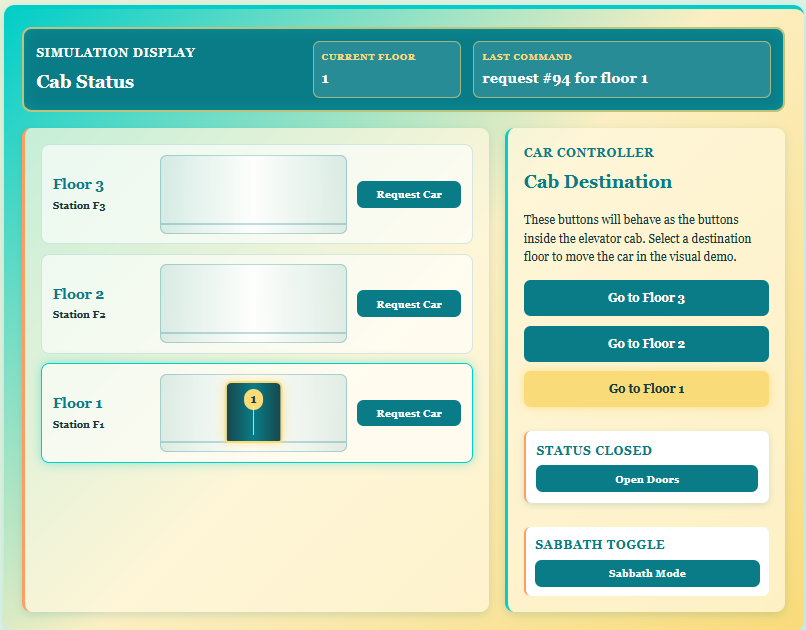
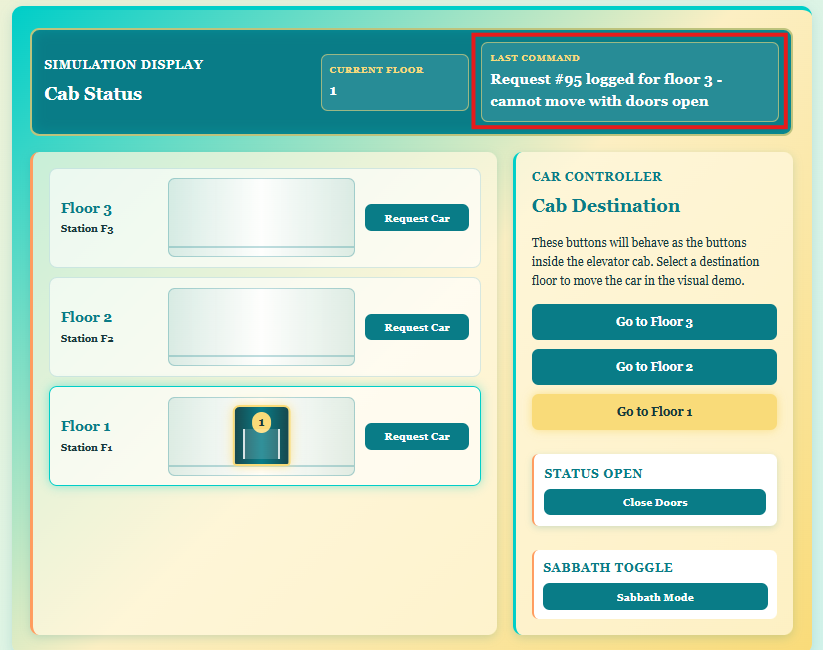
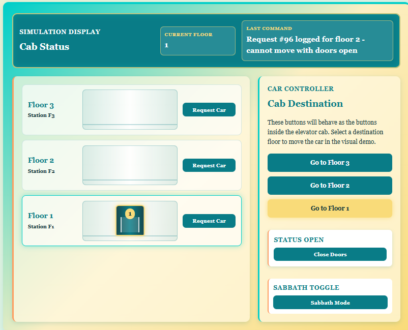

Added a working door toggle to the elevator-control page, created the elevator_state table, and synchronized the door state between JavaScript, PHP, MariaDB, and the webpage.
Implemented the elevator door toggle from end to end. The webpage now sends the requested door state through AJAX, PHP validates and stores it in MariaDB, and the visual elevator updates to show the doors as open or closed.
Key details
Purpose: Store and control the elevator door state from the website and prevent the visual elevator from moving while the doors are open.
Component or tool: elevator_control.php, JavaScript/AJAX, MariaDB elevator_state table, HTML, and CSS
Result: The open/close door toggle works, updates the database, remains synchronized after a page refresh, and blocks visual elevator movement while the doors are open.
Team contribution: Nick Kapuka
Door toggle switch functionality:
The toggle switch logic can be split into the JS and PHP functionality. The first step was to create a separate table as the current table did not have enough capabilities.
SQL elevator_state table
Simple once again. Create DB using SQL, and fill it with the first element (doors open).
From here, it was all coding. Let's begin with the JS to send the HTTP request to PHP
JS Pt 1
Same as before, we make a new URLSearchParams and send the HTTP request with request_action "door"
// function to handle sending an AJAX req to PHP for door state
function sendDoorState (doorState) {
// format the value like a normal submitted HTML form (the humble AJAX)
const requestData = new URLSearchParams();
// tell PHP where to run the code ("door" works with door state)
requestData.append("request_action", "door");
// doorState will contain either open or close so append it
requestData.append("door_state", doorState);
// send values to PHP without reloading page
return fetch("elevator_control.php", {
method: "POST",
headers: {"Content-Type": "application/x-www-form-urlencoded"},
body: requestData.toString()
})
// when PHP responds, decode JSON to JS Object to handle it
.then (function (response) {
return response.json();
});
}
After this, we must use PHP to listen to the request and query the DB to update it with the new status change.
PHP
After the initial POST, I added an if statement where code that handles the door movement/toggle switch functionality and queries the DB.
// handle a door-state update separately from a move elevator request
if($requestAction === 'door') {
// JS will send open/closed so check for that
$submittedDoorState = $_POST['door_state'] ?? '';
// add only two states for doors
$allowedDoorStates = ['open', 'closed'];
// reject other states
if(!in_array($submittedDoorState, $allowedDoorStates, true)) {
echo json_encode([
'success' => false,
'message' => 'invalid door state'
]);
exit;
}
// read the values - default in DB is false (boolean; 0)
$doorsOpen = 0;
if($submittedDoorState === 'open') {
$doorsOpen = 1;
}
// query DB
try {
// update the row that represents door state
$query = "
UPDATE elevator_state
SET doors_open = :doors_open
WHERE state_id = 1
";
$statement = $pdo->prepare($query);
$params = ['doors_open' => $doorsOpen];
$result = $statement->execute($params);
if($result) {
echo json_encode([
'success' => true,
'message' => 'door state updated',
'door_state' => $submittedDoorState
]);
} else {
echo json_encode([
'success' => false,
'message' => 'door state failed to update; its joever'
]);
}
} catch (PDOException $e) {
error_log($e->getMessage());
echo json_encode([
'success' => false,
'message' => 'query for door state failed, its joever'
]);
}
// door request complete, do not continue
exit;
}
Pretty simple. JS will send a request of "door" and the PHP will handle it. It first makes sure the submitted door state is valid. Following that, the next major section is querying the DB which has been seen many times in my entries - same old.
Make a query string
Prepare.
Pass parameters.
Execute.
Then based on the result, we used echo json_encode(); to send values back to the JS. From there, the JS handled it.
JS pt 2
From here, we use JS once more to handle the door response:
// handle PHP response to door state
function handleDoorResponse(responseData) {
if(responseData.success === true) {
// convert PHP's open/close to boolean
if(responseData.door_state === "open") {
// update page text
updateDoorDisplay(true);
} else {
// update page text
updateDoorDisplay(false);
}
// update the last command text
lastCommandDisplay.textContent = "Doors changed to " + responseData.door_state;
} else {
// PHP responded but SQL failed
// update the last command text
lastCommandDisplay.textContent = "Door update rejected " + responseData.message;
}
}
Additionally, there were two more helper functions to update the door display visually, switch between their states, and even visually update them using CSS to make it realistic.
// doors toggle function (between closed and open)
function updateDoorDisplay(newDoorState) {
doorsOpen = newDoorState;
// if the doors are closed, open them
if(doorsOpen === true) {
doorStatusDisplay.textContent = "Open";
doorToggleButton.textContent = "Close Doors";
// adds the CSS class to the entire moving elevator car.
elevatorCar.classList.add("doors-open");
// the doors are open, close them
} else {
doorStatusDisplay.textContent = "Closed";
doorToggleButton.textContent = "Open Doors";
// Remove the open-door class.
elevatorCar.classList.remove("doors-open");
}
}
// read the door state that PHP placed in the HTML (String)
const initialDoorState = doorControlPanel.dataset.doorState;
// convert string into a true ("closed" is false)
const initialDoorsOpen = initialDoorState === "open";
// update door-related elements with the data
updateDoorDisplay(initialDoorsOpen);
// decide which door state should be requested
function toggleDoors() {
let requestedDoorState = "open";
// if the doors are already open, request that they close.
if (doorsOpen === true) {
requestedDoorState = "closed";
}
lastCommandDisplay.textContent = "Requesting doors " + requestedDoorState + "...";
// ask PHP to update DB
sendDoorState(requestedDoorState)
// DB update succeeded or PHP returned a validation failure
.then(handleDoorResponse)
// network request or JSON decoding failure
.catch(handleRequestFail);
}
// wait for the toggle door switch to be clicked
doorToggleButton.addEventListener("click", toggleDoors);
The final result looked like so. Most of the UI was about the same but the "last command" syncs upon page refresh (it pulls the latest request #), and the open/close doors fully works.

Elevator-control page with the doors closedVisual elevator door state after using the door toggle
Additionally, the elevator can queue requests into the DB but the (visual) elevator will not move until the doors are closed. See below.

Elevator request queued while the visual doors are open

Visual elevator prevented from moving while the doors are open